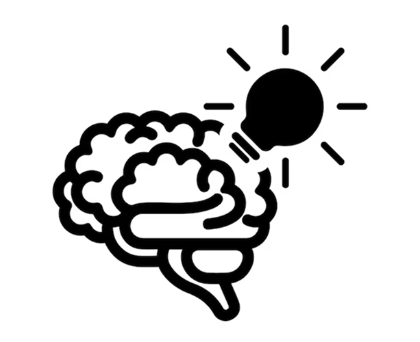

Attention Economy Overview:
For this written assignment, I had to write an essay talking about if the ones who give attention or the one who seeks attention holds the power in the attention economy. We had to write this assignment without A.I. and can only write this essay in class.
Technology Used:
- I used google docs and Easybib to write and cite my essay in MLA format.
- I also used thesaurus to find synonyms for words I wanted to change.

Concepts Learned:
- When writing this assignment, I was able to improve my writing vocabulary and sentence structures.
- I also learned how to improve my writing skills by understanding what and how a similar word is intended to be used instead of just finding a synonym.
Challenges & Solutions:
- A problem that I had was that I am in fact a slow paced worker, meaning I have slower progress to get this assignment done. It has always had my kryptonite, however due to this I am willing to place more time into assignments and projects including this one. A solution to this for this specific assignment, I had communicated with my instructor and was given permission to work on this assignment out of class.
- Another problem that I had was that the more I wrote, the more syntax errors and fragmented sentences I had. To fix this I carefully re-read everything and fixed up sentences and parts of my writing that I thought needed to be fixed.
- Another problem that I had when writing this assignment was that I was unsure on how to start the assignment. I was lost and confused on what needed to be written and how it would make sense to my instructor. However, a fortunate solution that helped me was asking my instructor for help and using the handouts they had given to the class.

Habits of the mind in action
- Investigate: I had to search for information on what I wanted to include in my argumentative essay. While also figuring out how the flow of my writing should sound like.
- Communication:I sought help from my instructor on the writing assignment for feedback and explanation to strengthen my writing assignment.